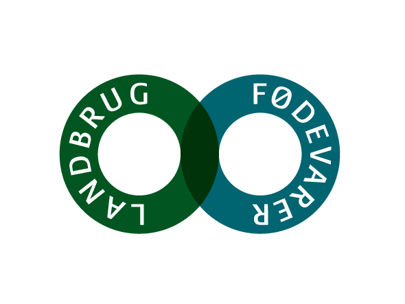

I 2022 var mængden af madspild over 800.000 ton,
hvoraf husholdningerne står for 30 pct., svarende til ca. 250.000 ton mad. Det viser tal fra Danmarks Statistik.

Om Os
Fødevareindustrien og landmændene er allerede i dag rigtig gode til at undgå spild eller fødevaretab. Eksempelvis når kasserede grøntsager, revnede æg, affald fra
slagterierne bliver brugt til dyrefoder, produktion af biogas, gødning, farmaceutiske produkter med videre. Det er kun meget få procent der går til spilde.
Vi fokusere hovedsageligt på Danmarks landbrug samt de vedliggende brancher såsom slagtere.
Ved at gå i samarbejde med disse virksomheder arbejder vi på at mindske det branchemæssige madspild imens vi også arbejder mod en mere klimavenlig
fremtid for Danmark. Vi er politisk aktive i Danmark for at kunne påvirke netop de ting som er relevante for vores medlemmer - og derigennem bliver det også
relevant for resten af Danmark.
Hvis du ønsker at læse mere om vores arbejde, både nationalt og internationalt, er du velkommen til at trykke nedenstående
for mere information.